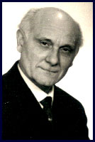
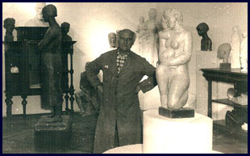
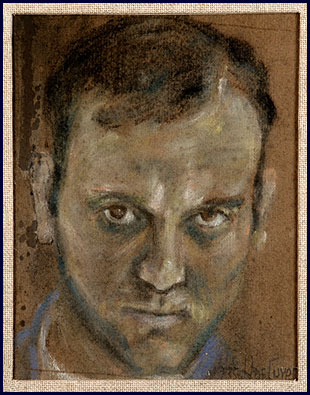
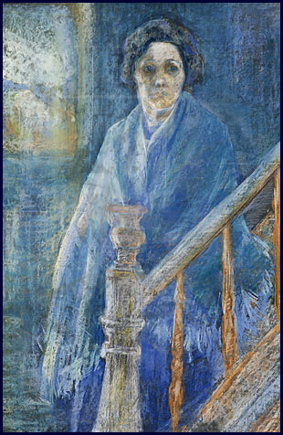
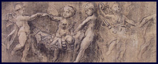
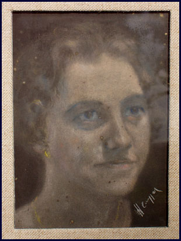

Herman De Cuyper werd op 22 november 1904 te Blaasveld geboren in een eenvoudig plattelandsgezin. Hij was de vierde en jongste zoon uit een gezin met zeven kinderen. Zijn vader Karel De Cuyper (1876–1964) was schoenmaker en gehuwd met Celestina Van De Perre (1881–1970).
Na de Eerste Wereldoorlog mocht Herman zich op aanraden van zijn onderwijzer en buurman laten inschrijven aan de Koninklijke Academie voor Schone Kunsten te Mechelen. Daar kwam hij op zestienjarige leeftijd, tijdens het schooljaar 1920–1921, terecht in de tekenklas van Theo Blickx (1875–1963). Deze was toen de meest toonaangevende Mechelse kunstenaar, die het talent van de knaap al vlug opmerkte en hem in zijn huisatelier opnam voor een doorgedreven privé-onderricht.
Aan de academie volgde hij zowel de cursussen beeldhouwen als schilderen, welke hij afsloot in 1923. Dit jaar werd zijn inzending voor schilderkunst bekroond met de Prijs Roger Langbehn. Directeur Jan Willem Rosier (1858–1931) was zijn leermeester als schilder en liet hem als leerling toe tot de selecte schetsclub van de Mechelse Sint-Lucasgilde.
In afwachting van zijn legerdienst in 1924 ging de beeldhouwer zich specialiseren tot meubelsculpteur aan de Stedelijke Vakschool te Mechelen bij Emile Bourgeois (1881–1947). Tijdens zijn militaire dienstplicht te Brussel mocht de kunstenaar van de legerleiding de avondcursus beeldboetsering volgen bij Arsène Matton (1873–1953) aan de Brusselse academie. Het jaar daarop startte de nijverheidsbeeldhouwer een eigen atelier op en werkte hij enkele jaren als figurist voor het gereputeerde Mechelse meubelbedrijf Horckmans. Bij het uitbreken van de economische recessie rond 1930 stopte Herman zijn werkzaamheden als meubelsculpteur en werd hij voltijds beeldend kunstenaar.
Op 4 maart 1933 huwde hij met Philomena Aelbrecht (1908–1993), een meisje uit Willebroek, en stichtte met haar een groot gezin. Rond 1938 deed de kunstenaar zijn intrede in de nieuw gebouwde woonst aan de Mechelsesteenweg te Blaasveld, waar hij honkvast, als boer-beeldhouwer, zijn gezin grootbracht en aan de uitbouw van een indrukwekkend sculpturaal oeuvre begon.
Op het einde van de Tweede Wereldoorlog vernietigde een Duitse V1-bom een aanzienlijk deel van de gipsen modellen uit de eerste creatieve periode van de kunstenaar.
Op 17 juni 1992 overleed Herman De Cuyper, op zesentachtigjarige leeftijd, te midden van zijn kinderen.
Fotogalerij



